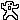

| 2012/07 23 Mon | 私服紹介なんてしてみたけどどうだろう♪♪(o・ω・)ノ)) |
わ、皆さんお久しぶりです(´･ω･`)
更新できなくてすみません

レッスンに励んでましたあ←
ふう
わたしはめっちゃ元気だったから
気にしないでねー

なんか最近、急に雨降ってきたり
ちょっと肌寒かったり...
不安定でしたねー(´-ι_-｀)ふぇ
体調崩しちゃいそうなお天気よ
ぶわわわ
でもまた明日からさまー復活らしいね

なつだ‼
なつだー‼
なつなんだー‼
なつはですね
うみとか
おまつりとか
はなびやったりとか
ぷーるとか
なつらしいとこに
いっぱいいきたいですねはいヽ(^0^)ﾉ
わーひらがないっぱいヽ(^0^)ﾉ
これは乃木充するしかでそ♡♡
いえあ
今日は私服を紹介したいと思いますー‼

じゃじゃじゃじゃーーん
ちょっと大人っぽくまとめてみたよー

ジャケットはレトロガールで、
レースのワンピースはお母さんのおさがりーヽ(^0^)ﾉ
めずらしく
膝上スカートよー‼
ミニってほど短くないから
着てみたのさははは( ˙³˙)
みなさん感想お願いしまーす

今日の乃木どこではアンダー楽曲
「涙がまだ悲しみだった頃」
が放送されましたねー♡‼
どうでしたか⁇
ちはるは右のほうよーく見とったら
いると思うので要ちぇっくや‼←

今日の質問は
髪の毛は黒髪が好き⁇それとも茶髪が好き⁇
いやー、
やっぱり茶髪に憧れるんですよ。
でもまだ黒髪を染めたくないし
大人になったらだなっ
って思うけど
んー(´･_･`)
迷うとこですなあ。←
皆さん教えてちょんまげじろう‼

おやすんっ
ばいるんっ
るんるんっ
ちはるんっ
♪♪(o・ω・)ノ))
コメント(82)
2012/07/23 00:48